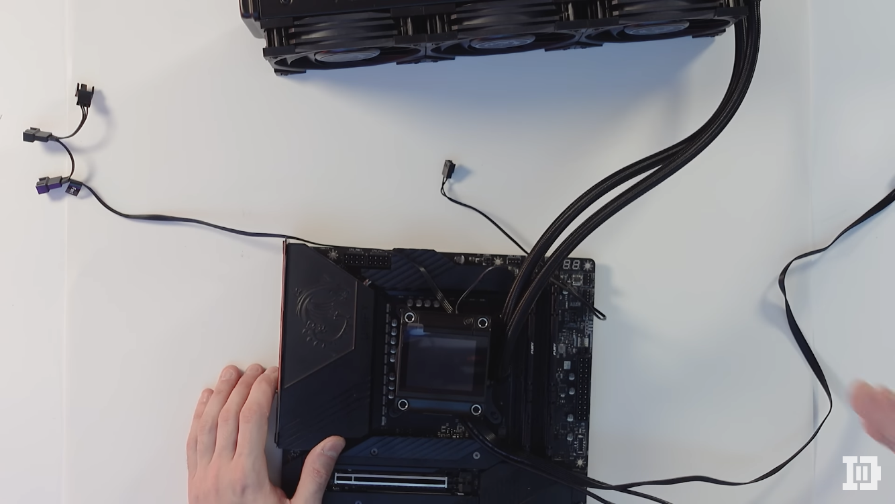

Bienvenue dans le jeu où vous etes le heros !
Jeux de simulation de construction de PC, où vous incarnez le héros et devez assembler les composants fournis pour construire un ordinateur fonctionnel.
Voici tous les composants et outils à votre disposition :
- Tournevis
- La notice pour chaque composant
Etape 0 : Le plan de travail
Il est important d'avoir un bon plan de travail pour monter un PC car cela peut aider à :
- Assurer la compatibilité des composants.
- Éviter les erreurs de montage.
- Économiser du temps et de l'effort.
- Garantir une performance optimale du PC.
- Minimiser les risques de dommages aux composants.
Cliquez ici pour netoyer et remettre en ordre votre plan de travail !
Félicitations, votre plan de travail est en ordre !
Etape 1 : La carte mère
La carte mère est la principale carte de circuit imprimé dans un ordinateur. Elle connecte tous les autres composants du système, tels que le processeur, la mémoire vive, les disques durs, les cartes d'extension, et plus encore, en utilisant des bus informatiques. La carte mère contrôle également les fonctionnalités de base de l'ordinateur, telles que la gestion de l'alimentation, la communication avec le système d'exploitation et les périphériques d'entrée/sortie.
Cliquez ici pour placer la carte mère sur le bureau !
La carte mere est entre de bonnes mains !
Etape 2 : Le processeur
Un processeur (ou CPU, pour Central Processing Unit) est le composant principal d'un ordinateur qui exécute les instructions informatiques. Il est responsable de toutes les tâches de traitement, telles que le calcul, la décision, la gestion des entrées/sorties, et plus encore. Le processeur est souvent considéré comme le "cerveau" de l'ordinateur, car il effectue les opérations fondamentales qui permettent à l'ordinateur de fonctionner.
1) Cliquez ici pour ouvrir le socket !
Félicitations le socket est ouvert !
2) Cliquez ici pour placer le processeur et refermer le socket !
Félicitations le processeur est en place !
Etape 3 : La pate thermique !
La pâte thermique est un matériau conducteur de chaleur utilisé pour améliorer la dissipation de la chaleur entre le processeur et le dissipateur de chaleur. Elle remplit un rôle important en aidant à refroidir les composants sensibles à la chaleur, tels que les processeurs, afin d'éviter les problèmes de surchauffe et de garantir une performance optimale de l'ordinateur. La pâte thermique aide à remplir les petits espaces entre les composants et à améliorer le transfert thermique en augmentant le contact surface-à-surface entre les composants.
Cliquez ici pour mettre un peu de pate thermique !
Félicitations la pate thermique est en place !
Etape 4 : La mémoire RAM !
La RAM (Random Access Memory) est une forme de mémoire vive utilisée dans les ordinateurs pour stocker temporairement les données et les instructions nécessaires pour les opérations en cours d'exécution. La RAM est plus rapide que le stockage permanent des disques durs, ce qui permet aux applications et aux systèmes d'exploitation de charger plus rapidement et de fonctionner de manière plus fluide. La RAM est considérée comme une mémoire volatile, ce qui signifie que les données sont effacées lorsque l'ordinateur est éteint. La quantité de RAM installée dans un ordinateur peut être augmentée pour améliorer les performances générales du système.
1) Cliquez ici pour prendre les barettes de ram
Voici vos barettes de ram à droite !
2) Cliquez ici pour clipser les barettes de ram

Voici vos barettes de ram en place !
Etape 5 : Le stockage
Le stockage est un composant de l'ordinateur qui permet de stocker des données de manière permanente. Il existe plusieurs types de stockage, notamment les disques durs (HDD), les disques durs à état solide (SSD), les supports amovibles (tels que les clés USB), et plus encore. Le stockage est utilisé pour enregistrer les fichiers de l'utilisateur, le système d'exploitation, les applications et les données diverses. La capacité de stockage peut être augmentée en ajoutant des disques durs supplémentaires ou en installant des supports de stockage plus importants. La vitesse et la fiabilité du stockage peuvent affecter les performances de l'ordinateur et le temps de chargement des applications.
1) Cliquez ici pour prendre le SSD Nvme
Voici le SSD !
2) Cliquez ici pour clipser le SSD nvme
SSD en place !
Etape 6 : Le Ventirad ou Watercooling
Un ventirad (ou dissipateur de chaleur) est un composant qui aide à refroidir les composants sensibles à la chaleur dans un ordinateur, comme le processeur. Il se compose généralement d'un radiateur en métal et d'un ventilateur qui aspire l'air chaud à l'intérieur de l'ordinateur et le renvoie à l'extérieur. Le ventirad aide à dissiper la chaleur générée par le processeur pour éviter les problèmes de surchauffe.
Le watercooling est une technique de refroidissement qui utilise de l'eau pour dissiper la chaleur des composants de l'ordinateur. Il se compose généralement d'un système de radiateur, de tuyaux et de pompes qui transportent l'eau à travers le système pour dissiper la chaleur des composants critiques, comme le processeur. Le watercooling est souvent utilisé par les joueurs et les utilisateurs de PC de pointe qui cherchent à refroidir leurs composants de manière plus efficace et silencieuse que les ventirads conventionnels.
Cliquez ici pour mettre en place le watercolling !

Watercolling en place !
Etape 7 : Le boitier
Le boîtier d'un ordinateur est un boîtier en métal ou en plastique qui abrite tous les composants internes de l'ordinateur. Il protège les composants de la poussière et de la saleté et permet également de les maintenir en place. Le boîtier peut également fournir des connecteurs pour les entrées et les sorties, comme les ports USB, les ports audio et vidéo, les ports Ethernet, et plus encore. Les boîtiers d'ordinateur peuvent être de différentes tailles et formes, en fonction du type d'ordinateur et des besoins de l'utilisateur, tels que les boîtiers de tour, les boîtiers mini-tour, les boîtiers de format moyen tour, les boîtiers compact, etc. Les boîtiers peuvent également être personnalisés avec des panneaux latéraux en verre trempé, des ventilateurs supplémentaires, et d'autres options pour améliorer les performances et la esthétique de l'ordinateur.
Cliquez ici pour mettre la carte mere et le watercooling dans le boitier !
Carte mère en place !
Etape 8 : L'alimentation
L'alimentation d'un ordinateur, également appelée bloc d'alimentation, fournit de l'énergie électrique à tous les composants de l'ordinateur. Elle convertit le courant électrique alternatif en courant électrique continu pour alimenter les différents composants de l'ordinateur, comme le processeur, la carte mère, la mémoire vive (RAM), le stockage, les cartes graphiques, et plus encore. L'alimentation d'un ordinateur peut également inclure des fonctionnalités de protection pour empêcher les dommages causés par les surtensions et les courts-circuits. Les alimentations d'ordinateur sont disponibles en différentes tailles et puissances en fonction de la configuration de l'ordinateur et des besoins en énergie des différents composants. Il est important de choisir une alimentation qui correspond à la configuration de l'ordinateur et qui fournit une alimentation stable et fiable pour les composants critiques.
Cliquez ici pour mettre l'alimentation dans le boitier !
Alimentation en place !
Etape 9 : La carte graphique
Une carte graphique, également appelée carte vidéo ou GPU (Unité de traitement graphique), est un composant de l'ordinateur dédié à l'affichage et au traitement des images et des graphiques. Elle traite les informations graphiques et les envoie à un moniteur pour l'affichage sur l'écran. Les cartes graphiques peuvent offrir une performance graphique significativement supérieure à celle de l'intégration graphique dans la plupart des processeurs. Les cartes graphiques modernes sont souvent utilisées pour les jeux vidéo, la modélisation 3D, l'édition vidéo et audio, et d'autres tâches intensives en graphismes. Les cartes graphiques sont disponibles en différentes tailles et types de connecteurs en fonction des besoins de l'utilisateur et de la configuration de l'ordinateur.
Cliquez ici pour clipser la carte graphique !
Alimentation en place !
Etape 10 : Etape Finale !
Vous pouvez maintenant allumer l'ordinateur !
Voici le boutton power !
Félicitations héros ! Vous avez reussi à monter votre premier PC !
Rejouer